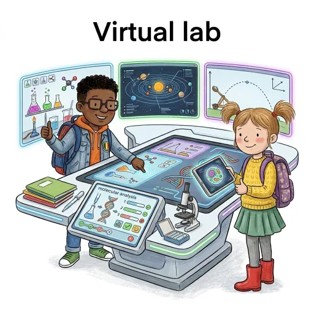

De verdwijnende bladeren
Waardoor verdwijnen dode bladeren?
Elke herfst vallen er tonnen bladeren in het bos. Een jaar later zijn ze verdwenen. Zet zelf een experiment op om te ontdekken waarom.
Word een echte labowetenschapper: kies een onderzoek, voer de proeven zelf uit en trek je eigen besluiten.

Waardoor verdwijnen dode bladeren?
Elke herfst vallen er tonnen bladeren in het bos. Een jaar later zijn ze verdwenen. Zet zelf een experiment op om te ontdekken waarom.
Hebben abiotische factoren een invloed op levende wezens?
Meet de temperatuur, het licht en de vochtigheid van twee zones, en determineer en tel dan de levende wezens in een telkader. Je histogram zal het verschil tonen.
Wat gebeurt er met een bos als één soort verdwijnt?
Bouw met ecologische kaarten het voedselweb van een Belgisch bos. Dan slaat een ziekte toe: laat het model 10 jaar lopen, en vergelijk met één enkele voedselketen.
Kort gezegd: een echt labo, op het scherm. Elk labo begint met een vraag. Stel een hypothese op, voer dan zelf het experiment uit en kijk goed wat er gebeurt. Noteer je waarnemingen in je schrift — het labo doet het niet voor jou. Gebruik op het einde je resultaten om de vraag te beantwoorden. Onderlijnde woorden kun je in het Frans vertalen.
Tip van de leerkracht: een wetenschapper vertrouwt op resultaten, niet op een eerste indruk. Komen je resultaten niet overeen met je hypothese? Dat is geen fout. Ook een verkeerde hypothese leert je iets.